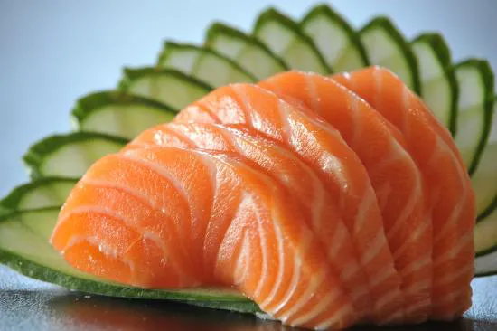

Aberto de Terça a Domingo, das 18:00 às 23:00
Restaurante Sakura
Bem-vindo ao Restaurante Sakura, onde você encontra os sabores autênticos da culinária japonesa!
Oferecemos
pratos frescos e deliciosos, preparados com ingredientes de alta qualidade. Venha viver uma experiência única!
Cardápio

Sushi Variado
R$55,00- INGREDIENTES:
- - Peixe fresco (salmão, atum)
- - Arroz temperado
- - Alga nori
- - Gengibre
- - Molho shoyu

Sashimi
R$60,00- INGREDIENTES:
- - Peixe fresco (salmão, atum)
- - Gengibre
- - Wasabi
- - Molho shoyu
Temaki
R$35,00- INGREDIENTES:
- - Alga nori
- - Arroz temperado
- - Peixe fresco
- - Cream cheese
- - Cebolinha
Yakisoba
R$45,00- INGREDIENTES:
- - Macarrão
- - Legumes frescos
- - Carne ou frango
- - Molho especial

Hot Roll
R$40,00- INGREDIENTES:
- - Peixe fresco
- - Cream cheese
- - Massa empanada
- - Molho especial
Sobre nós
O Restaurante Sakura traz o autêntico sabor do Japão para PARAISO. Com mais de 10 anos de tradição, oferecemos
pratos frescos e deliciosos, preparados com ingredientes de alta qualidade. Nosso ambiente é acolhedor e
perfeito para refeições em família ou encontros especiais.
Atendemos de terça a domingo, das 18h às 23h. Delivery disponível através dos telefones (00) 0000-0000 e (00)
0000-0000.
Bairros atendidos: Centro, Cruzeiro, Vila Rubens e adjacências.
Contato e Localização
ESTAMOS LOCALIZADOS NO CENTRO DE PARAISO
- ENDEREÇO RESTAURANTE SAKURA
R. PARAISO, 331 - Centro, PARAISO - PR, 500-238 Tel: (00) 0000-0000 e (00) 0000-0000 contato@sakura.com.br